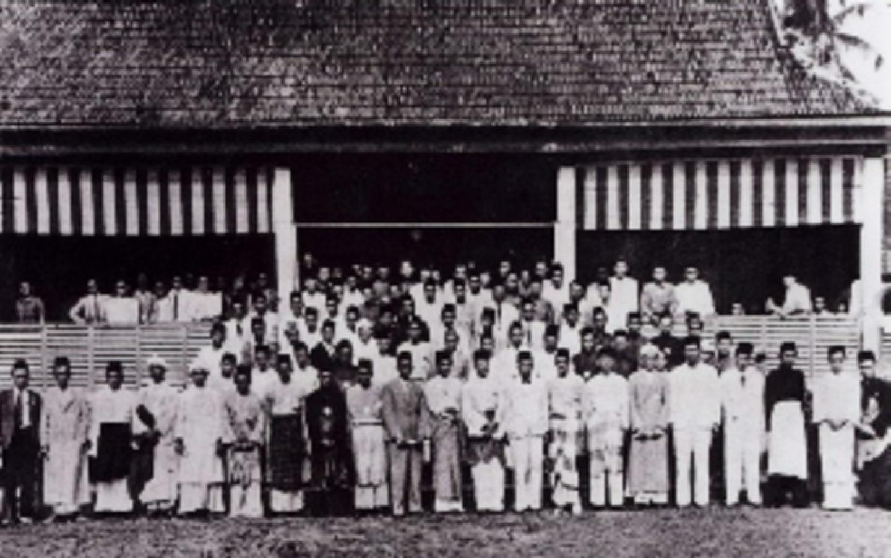
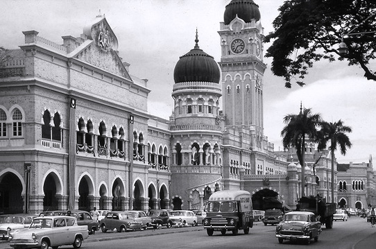
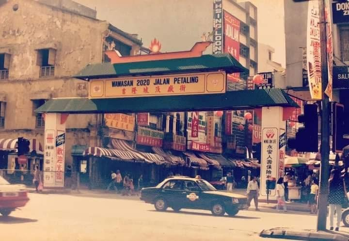
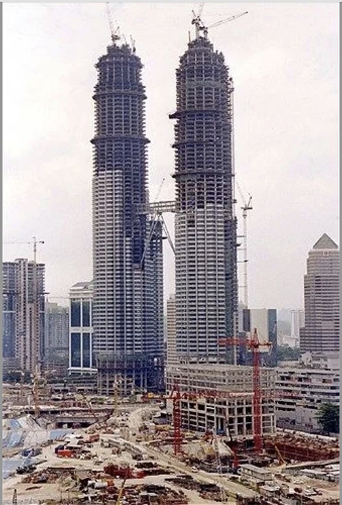

Kuala Lumpur Railway Station
Showcasing the station's beautiful Moorish style with an old steam train at the platform, reflecting early rail travel in Malaysia.

Kelab Sultan Sulaiman
It documents the First Malay Congress (Kongres Melayu Pertama) held in March 1946. This historic event directly led to the formation of the United Malays National Organisation (UMNO).

Sultan Abdul Samad
The administrative center during the British colonial period, blending Moorish and Mughal architectural styles, featuring an iconic grand clock tower.

Central Market
The market originally served as an open-air space for locals. The Art Deco concrete building seen in the image was completed in 1937. For decades, vendors and shoppers packed the building to trade fresh produce, meats, and daily necessities.

Petaling Street
The heart of Chinatown in KL,"Wawasan 2020 Jalan Petaling". This refers to "Vision 2020," a famous national plan introduced in 1991 to turn Malaysia into a fully developed country by the year 2020.

Petronas Twin Towers
Petronas Twin Towers in Kuala Lumpur, Malaysia, were built between 1993 and 1996 through a highly coordinated, fast-track engineering process.
